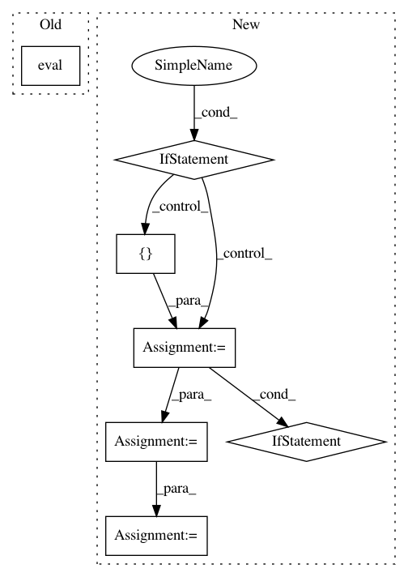

2154d789ef0d79debe2cc522751ae7072e8b22dc,torchsample/modules/super_module.py,SuperModule,predict_loader,#SuperModule#Any#Any#Any#,475
Before Change
loader,
cuda_device=-1,
verbose=1):
self.eval()
preds = []
for batch_idx, batch in enumerate(loader):
if loader.dataset.has_target:
batch = batch[0]
After Change
verbose=1):
prediction_list = []
for batch_idx, batch_data in enumerate(loader):
if not isinstance(batch_data, (tuple,list)):
batch_data = [batch_data]
input_batch = batch_data[0]
if not isinstance(input_batch, (list,tuple)):
input_batch = [input_batch]
input_batch = [Variable(ins) for ins in input_batch]
if cuda_device > -1:
input_batch = [ins.cuda(cuda_device) for ins in input_batch]
prediction_list.append(self(*input_batch))
return torch.cat(prediction_list,0)
In pattern: SUPERPATTERN
Frequency: 3
Non-data size: 7
Instances
Project Name: ncullen93/torchsample
Commit Name: 2154d789ef0d79debe2cc522751ae7072e8b22dc
Time: 2017-04-28
Author: ncullen@modv-vlan533.0527.apn.wlan.wireless-pennnet.upenn.edu
File Name: torchsample/modules/super_module.py
Class Name: SuperModule
Method Name: predict_loader
Project Name: keras-team/keras
Commit Name: 94dbc3042f5a85b399f5ce2859d4e8fbafd235b9
Time: 2017-07-06
Author: me@taehoonlee.com
File Name: tests/keras/backend/backend_test.py
Class Name:
Method Name: check_single_tensor_operation
Project Name: keras-team/keras
Commit Name: 94dbc3042f5a85b399f5ce2859d4e8fbafd235b9
Time: 2017-07-06
Author: me@taehoonlee.com
File Name: tests/keras/backend/backend_test.py
Class Name:
Method Name: check_two_tensor_operation